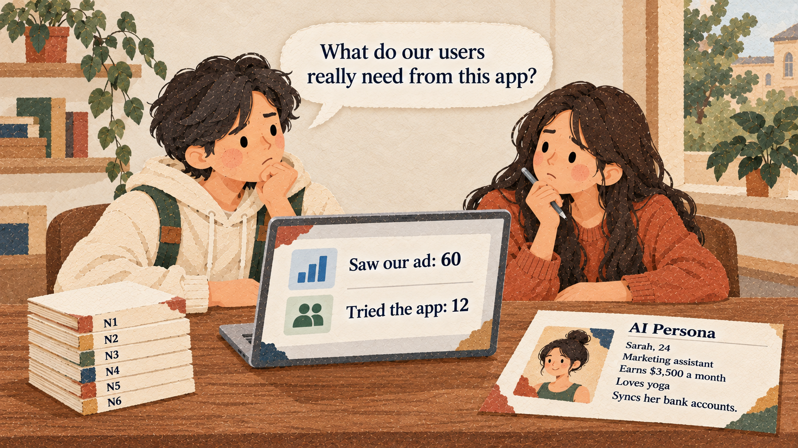

Root problem
Few people try the app
- A student team is building a budgeting app.
- 60 students saw the ad. Only 12 tried the app.
- The ad said "Take control of your money!" and spoke to no real need.

Root problem: few people try the team's budgeting app.
Use AI to build customer profiles from evidence, not from imagination.
Fictional data created for this class. File: data/session_2_4_interview_notes.csv
This is the evidence. Every profile detail must point to one of these notes.
| Note | What the person said |
|---|---|
| N1 | My work shifts change every week, so my pay changes too. I want to know how much I can spend before Friday. |
| N2 | I get paid on different days each month. I never know if I can afford a weekend trip. |
| N3 | I forget bill dates even when I have the money. A reminder a few days early would help. |
| N4 | I paid a late fee twice last semester because I missed my phone bill. |
| N5 | I already use a spreadsheet. I would switch only if tracking takes less time. |
| N6 | I do not want a new app to connect to my bank account. |
Before you ask an AI to describe customers, know what these words mean.
What real people said or did.
Here: the six interview notes, N1 to N6.
The progress a person wants to make.
N1: know how much I can spend before Friday
What stops a person from trying a product.
N6: no bank connection
Each example uses the budgeting app.
A short summary of one group with the same need, supported by at least two notes.
Pay changes, wants safe weekly spending (N1, N2)
A claim the team believes but has not tested yet.
Example: "A weekly spending view will help people with changing pay." Label it as a hypothesis, not a fact.
Check each detail of the AI persona against the notes.
| AI persona detail | Supporting note | Result |
|---|---|---|
| Sarah, 24 | None | Invented |
| Marketing assistant | None | Invented |
| Earns $3,500 a month | None | Invented |
| Loves yoga | None | Invented |
| Syncs her bank accounts | N6 says the opposite; the app has no bank linking | Wrong |
0 of 5 details come from the interviews
The instructor runs the prompts below and compares the answers.
Same notes and product facts. Compare what the prompt asks for.
Create two customer personas for our budgeting app and write an ad for each one.
Two persona cards with names, ages, jobs, incomes, and hobbies, and ads such as "Sync all your accounts and save $200 a month!"
Copy this prompt exactly.
Here are our interview notes: N1: My work shifts change every week, so my pay changes too. I want to know how much I can spend before Friday. N2: I get paid on different days each month. I never know if I can afford a weekend trip. N3: I forget bill dates even when I have the money. A reminder a few days early would help. N4: I paid a late fee twice last semester because I missed my phone bill. N5: I already use a spreadsheet. I would switch only if tracking takes less time. N6: I do not want a new app to connect to my bank account. Create two exciting personas with a name, age, job, and income, and write ads that make them excited to buy.
Each part of the prompt matters.
Personas that use the notes but add an age, a job, and an income for each person, and ads that promise to "save you money every month."
Steps 1 and 2. Copy this prompt exactly.
We are building a budgeting app. Use only the interview notes and product facts below. Product facts: - Available: manual expense entry, a weekly spending view, bill reminders. - Not available: bank account linking. Price: not set. Interview notes: N1: My work shifts change every week, so my pay changes too. I want to know how much I can spend before Friday. N2: I get paid on different days each month. I never know if I can afford a weekend trip. N3: I forget bill dates even when I have the money. A reminder a few days early would help. N4: I paid a late fee twice last semester because I missed my phone bill. N5: I already use a spreadsheet. I would switch only if tracking takes less time. N6: I do not want a new app to connect to my bank account. | Group the notes by similar need. Make two customer profiles. Each profile needs at least two notes with the same need. For each profile, give: the need, the supporting note IDs, one barrier with its note ID, the available feature that fits the need, and one question for the next interview. Every detail must cite a note ID. Do not add age, job, income, or hobbies. Do not write ads yet. |
Each part of the prompt matters.
Step 3, sent in the same chat after Improved Prompt 1. Copy this prompt exactly.
I checked your profiles against the notes. Profile A (pay changes, wants safe weekly spending): N1, N2. Profile B (forgets bills, wants early reminders): N3, N4. Barriers: N5 (tracking must be fast), N6 (no bank connection). Write one short message for each profile, under 30 words. Use only available features. Do not promise savings or a price. After each message, list the note IDs and the feature it uses. Label any claim we have not tested as "Hypothesis."
Each part of the prompt matters.
Guided practice. Follow the five steps in order.
Use this table to check the AI. N5 and N6 can apply to both profiles if the note ID is cited.
| Profile | Need | Notes | Barrier | Feature that fits |
|---|---|---|---|---|
| A | Pay changes; wants to know safe spending for the week | N1, N2 | Tracking must take less time than a spreadsheet (N5) | Weekly spending view |
| B | Forgets bill dates; wants a reminder before the due date | N3, N4 | Does not want to connect a bank account (N6) | Bill reminders, with manual entry and no bank linking |
The team runs two more interviews. Where does each new note belong?
Continue with the same notes, product facts, and profiles. Here is a new interview note: [note ID and text]. Does it fit Profile A, Profile B, or neither? Cite the note IDs you compare it with. Remember: a profile needs at least two notes with the same need. Which available feature, if any, meets this need? If none, write "Not available." Do not promise a feature the app does not have.
In the chat from Exercise 1, copy and send this completed prompt.
Continue with the same notes, product facts, and profiles. Here is a new interview note: N7: "I share rent and groceries with two roommates. I want an easy way to split costs with them." Does it fit Profile A, Profile B, or neither? Cite the note IDs you compare it with. Remember: a profile needs at least two notes with the same need. Which available feature, if any, meets this need? If none, write "Not available." Do not promise a feature the app does not have.
N8: "I tutor and work at a cafe, so my pay comes on different days. On Friday I decide if I can go out."
Use Report_template.docx in Microsoft Word. Save it as FirstName_StudentID_W8_Keyword.docx and upload it to iLearn by 23:59 on class day.
Check your report before you hand it in.